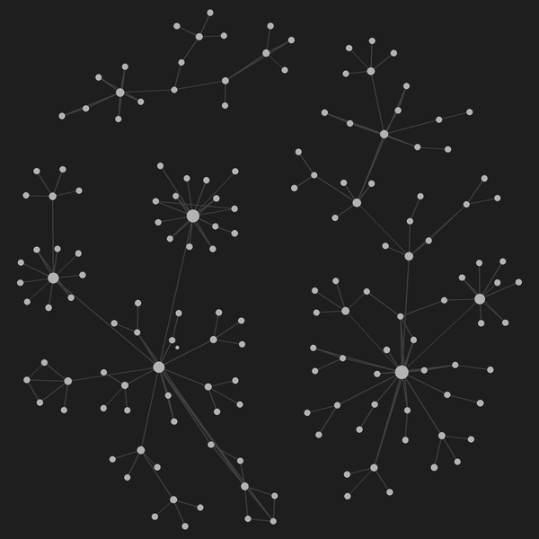

agent-orchestration
Coordinator
Workhorse

Shared vaultArchitecture study of two coding agents on different frontier models, split by role, not by topic: Claude Opus 5 handles comms, docs and commit review; GPT-5.6 Luna takes iOS builds and long jobs. One writes, the other attacks it — neither wins by sounding confident; go quote the code. Whichever claim survives verification stands. Nothing is automated: a human still does the routing, which is the weak point.
- Context windows are ephemeral: durable memory is a linked-Markdown Obsidian vault, read at session start.
- One hub note per folder, parent-to-child links only — no sibling edges, so the graph stays navigable.
- A push hook reviews each commit's diff against the docs and writes them back in sync.
Tradeoffs · Documents a working setup rather than packaging it as a framework — the patterns port, the wiring doesn't.
Architecture and reusable patterns